医療法人おひさま会 DXソリューション
神戸市を拠点に5クリニックを展開する在宅医療法人。
51のシステムをすべて内製で開発・運用し、
現場の「困った」をデジタルで解決しています。
DXは業務効率化のためではない。
患者さんに伴走する時間を増やすためのもの。
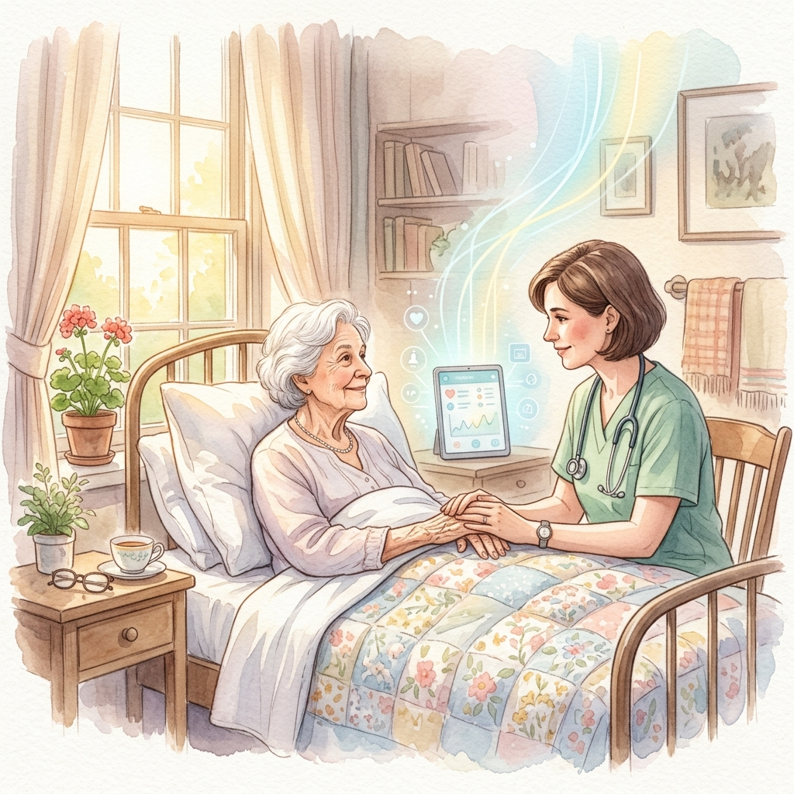
1日8時間のうち2時間しか患者さんと向き合えていないなら、
事務作業を減らすだけで、対面時間は2時間から4時間に倍増する。
DXは患者さんに伴走する時間を増やすためのもの。— 山口 高（理事長）
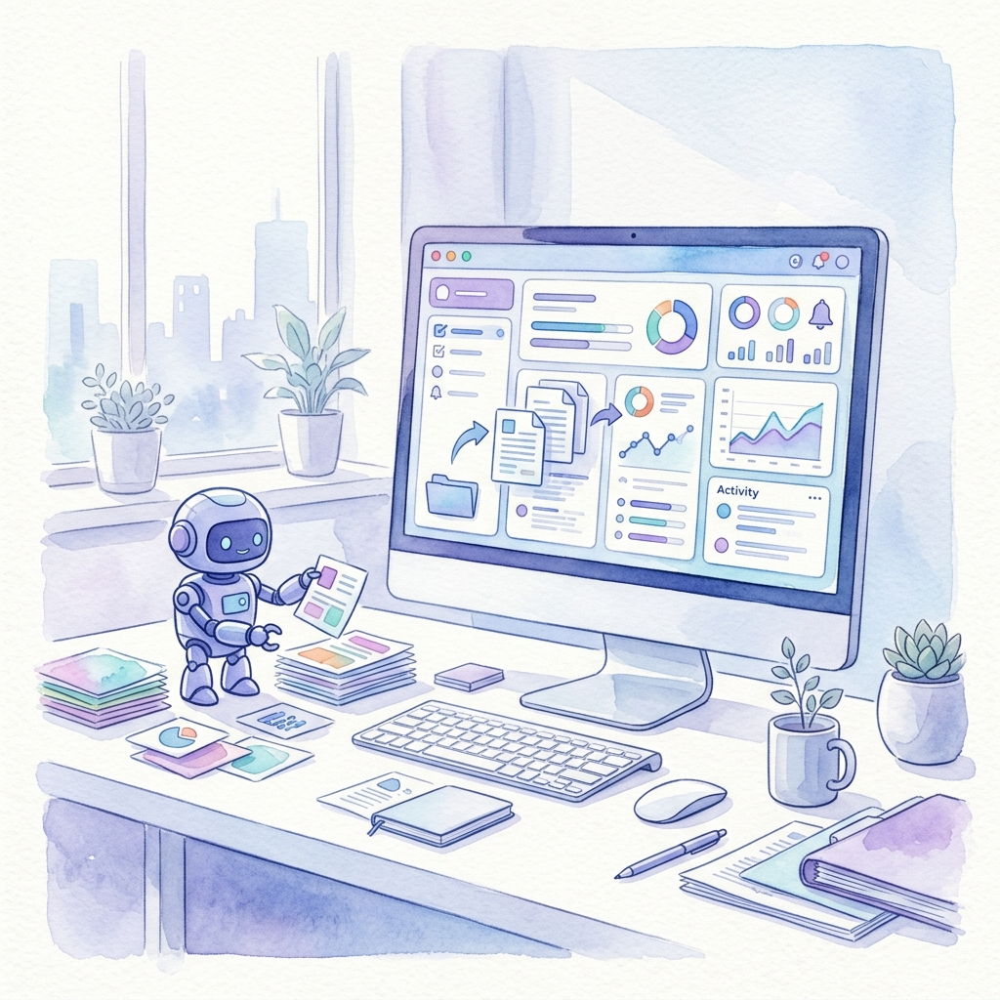
おひさま会のDXは「対人業務にAIを割り込ませない」という方針で進めています。
AIや自動化が担うのは、あくまで事務作業・定型作業だけ。
現場のスタッフが患者さんと過ごす時間を最大化すること。それがすべての原点です。
在宅医療現場のリアルな課題から生まれたシステム群
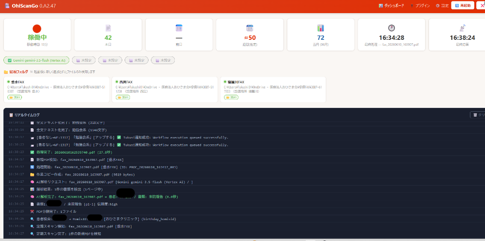
FAX受信PDFをAIが即座に解析。患者特定・書類分類・PDF分割を自動処理し、電子カルテへ自動ファイリング。
詳細を見る →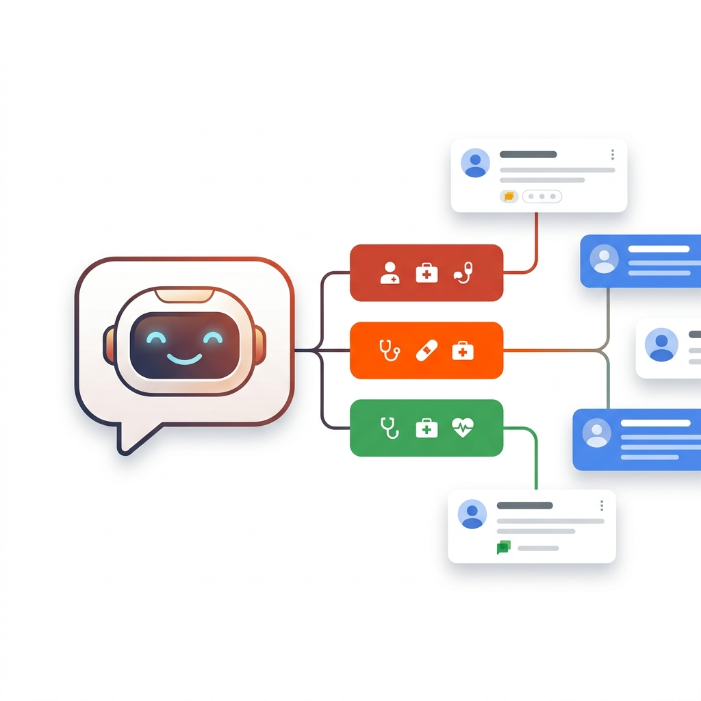
患者・施設からの問い合わせを3軸トリアージで自動分類。Google Chatに即時通知し、チャット上でステータス管理が完結。
詳細を見る →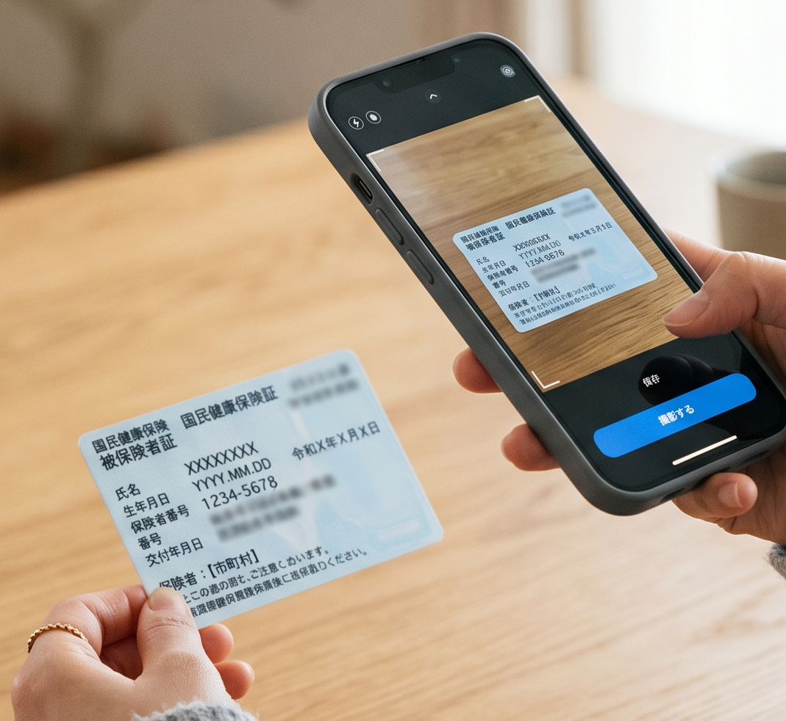
スマホで保険証を撮影するだけでAIが自動判別。PDF変換・月別フォルダ自動保存。マイナンバーカード誤撮影も防止。
詳細を見る →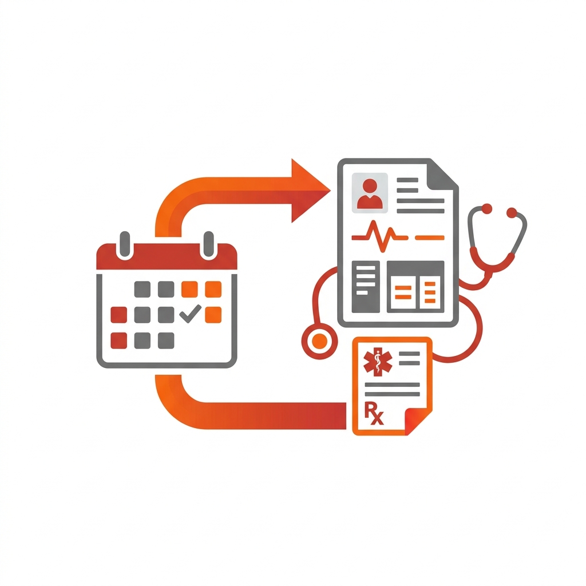
訪問診療管理システムから往診予定を取得し、電子カルテへ白紙・引用カルテを自動作成。処方日数の自動計算にも対応。
詳細を見る →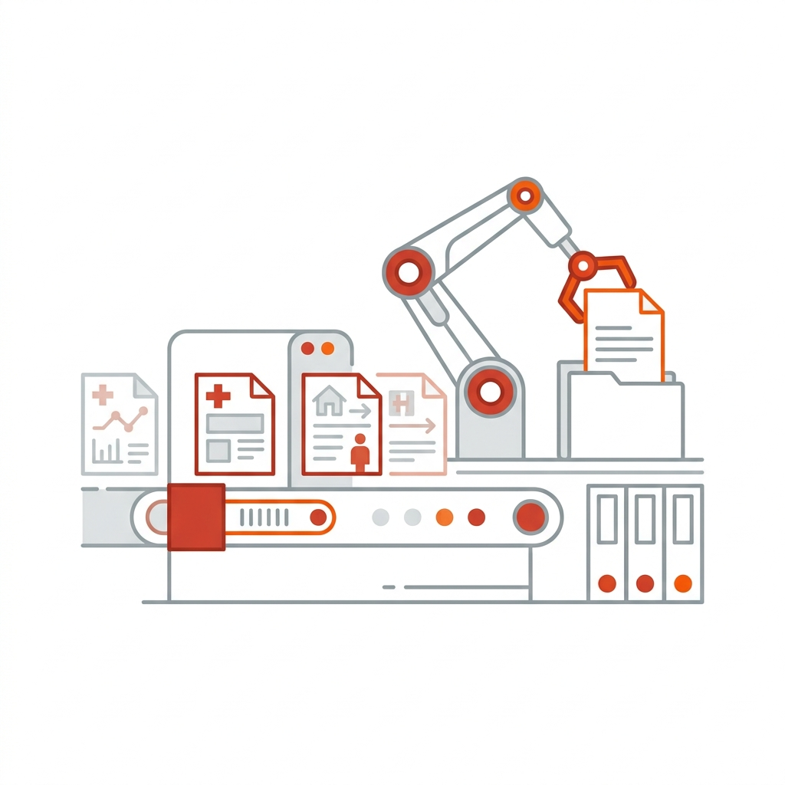
訪問看護指示書・診療情報提供書などの定期書類を電子カルテ上で全自動作成。有料RPAツールを内製で置き換え。
詳細を見る →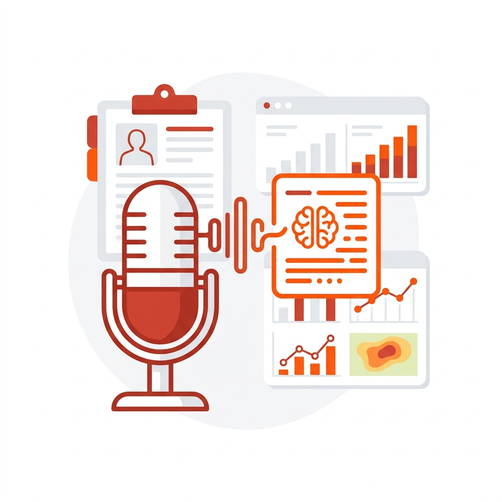
診察時の音声をAIが文字起こし。患者ごとの診療記録として管理。月別グラフ・ヒートマップ・分析ダッシュボード付き。
詳細を見る →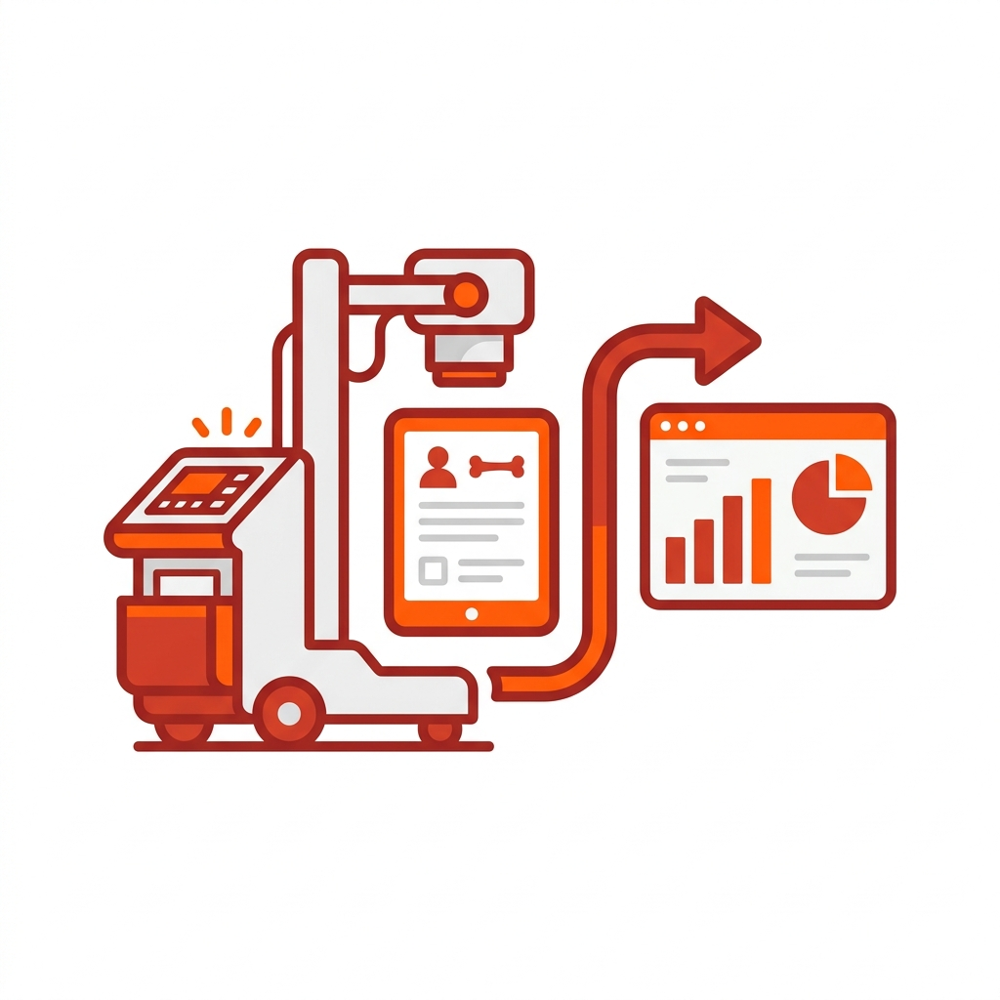
訪問診療のレントゲン依頼から撮影完了フロー・月次集計まで一元管理。健康診断の集団検診機能も搭載。
詳細を見る →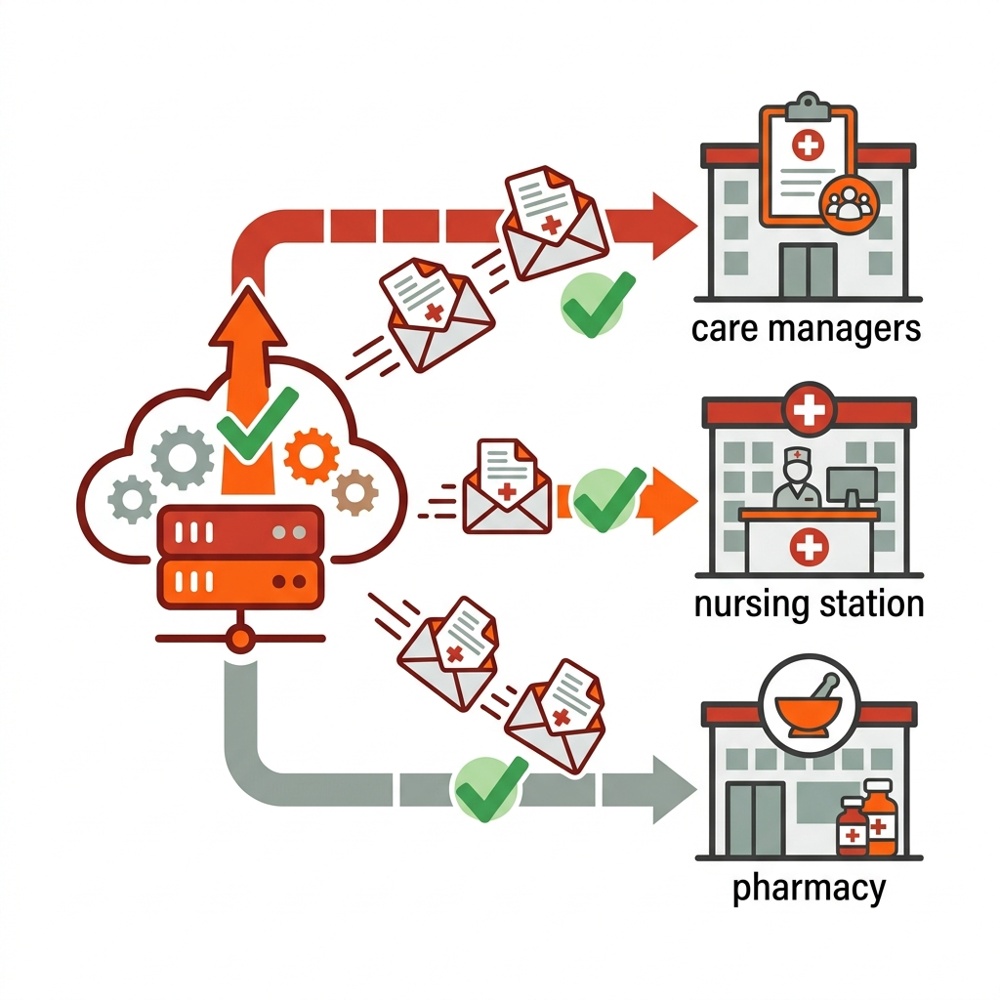
ケアマネ・訪問看護・薬局向けに書類をメール自動配信。事業所登録から重複チェック・配信まで全自動。
詳細を見る →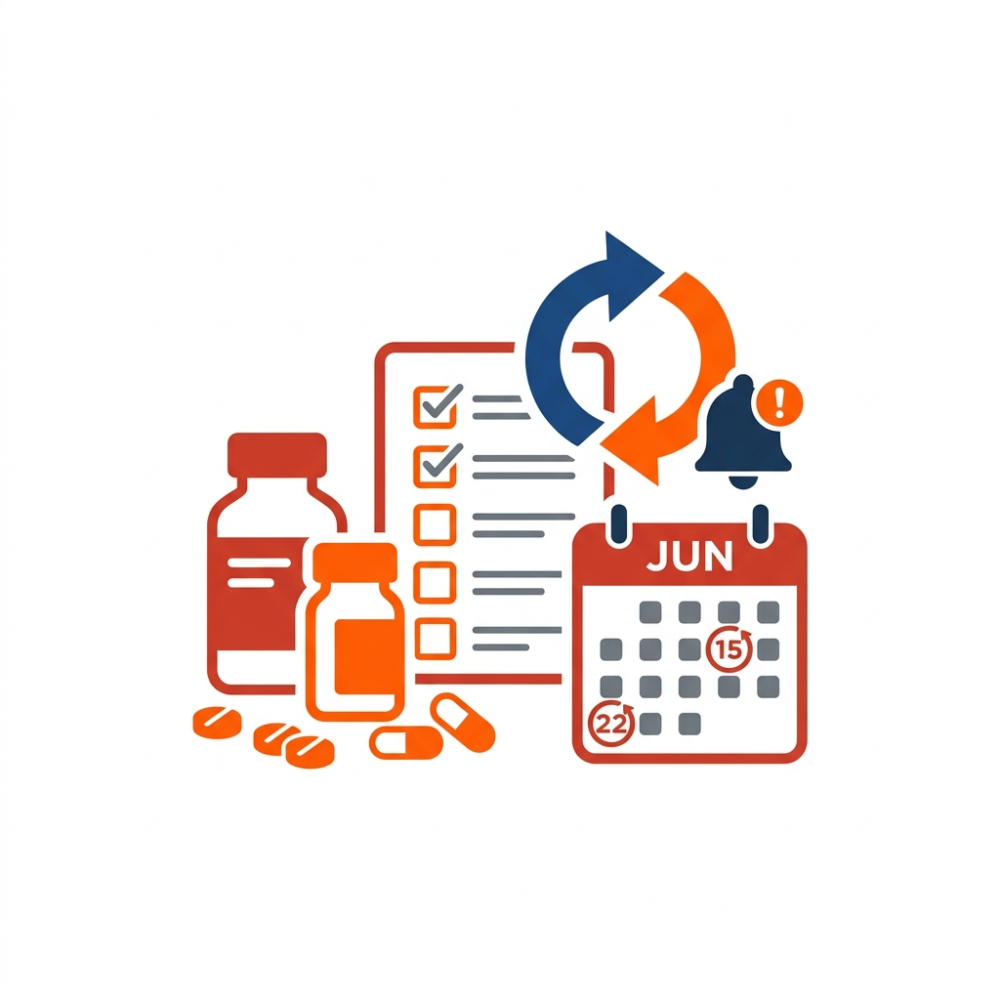
在庫チェック・発注依頼・チャット通知をワンストップで管理。「月3週の火曜日」など複雑な周期発注にも対応。
詳細を見る →他にも 往診予定チェッカー・食支援システム・HALO(DXポータル)・MeetRecorder など多数を運用中
全ての人が、自分らしく生きる。そのために、必要な時そばにいる存在でありたい。
病気だけでなく、本人の生き方を第一に考える。パートナーとして、進む道を一緒に考えます。
病院やケア施設、様々な方と連携し、地域に根ざした医療体制を作り、人々の暮らしと健康を守ります。
それぞれの職種のプロたちが集まり、互いに支え合い、高め合うことでチームとしての更なる成長を目指します。
| 法人名 | 医療法人 おひさま会 |
|---|---|
| 共通理念 | A New Harmonious World. |
| スローガン | 伴走医療 |
| 理事長 | 山口 高秀 |
| 設立 | 2006年（医療法人化 2007年） |
| 所在地 | 兵庫県神戸市垂水区旭が丘1丁目9-60 |
| 診療所 | 関西5クリニック（神戸・西宮・寝屋川・舞子・芦屋） |
| 連絡先 | TEL: 078-708-2522 |
| 公式サイト | ohisamakai.nhw.jp |